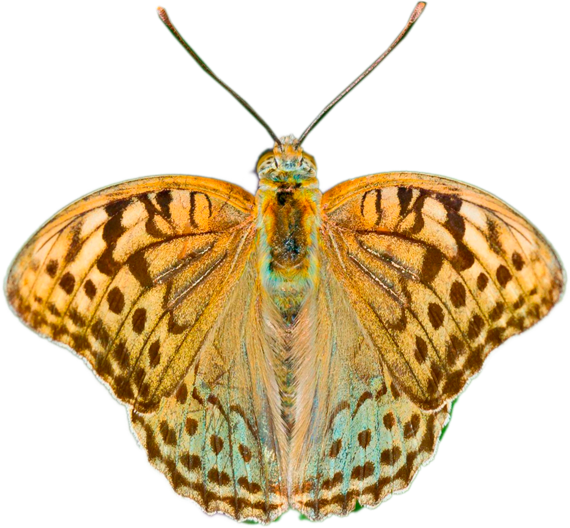
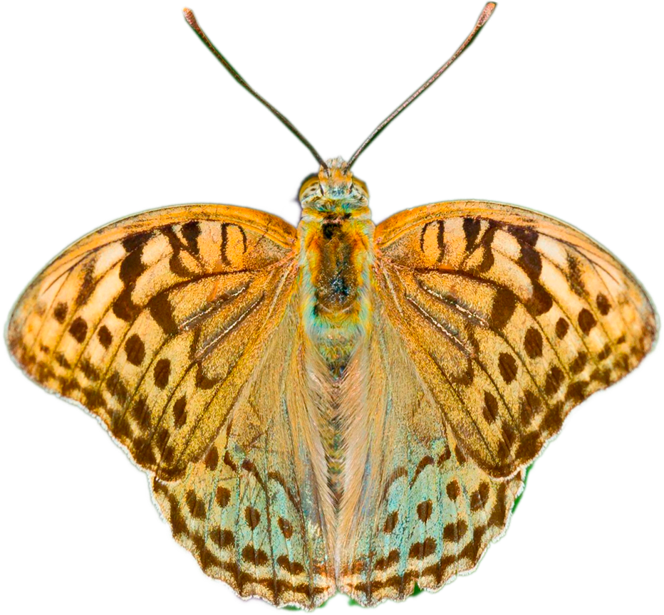

Esperidi
Gli Esperidi (Hesperiidae), comunemente noti come skipper, rappresentano una famiglia di farfalle diurne che si distingue per caratteristiche intermedie tra le farfalle “classiche” e le falene.
Nonostante il corpo robusto e compatto, queste farfalle sono note per un volo estremamente rapido e saltellante, da cui deriva il loro nome inglese “skipper” (saltatore). Il corpo è più muscoloso rispetto ad altre farfalle diurne, con ali relativamente corte e triangolari che conferiscono agilità e velocità nei movimenti.
 

Morfologia
Gli Esperidi presentano antenne clavate, ma spesso leggermente uncinate all’estremità, un dettaglio che li distingue da altre famiglie di Ropaloceri. L’apparato boccale è succhiante, adatto all’alimentazione di nettare e linfa, e le zampe sono ben sviluppate per consentire rapidi movimenti sulle fioriture.
La colorazione delle ali varia dal marrone al grigio, spesso con macchie chiare o iridescenze bluastre, caratteristiche che offrono sia mimetismo che segnalazione intra-specifica.
Il ciclo vitale degli Esperidi segue la metamorfosi completa
Le femmine depongono le uova singolarmente sulle piante nutrici, solitamente specie erbacee appartenenti a famiglie come Poaceae, Fabaceae e Asteraceae.
I bruchi sono cilindrici, di colore verde o marrone chiaro, e vivono prevalentemente all’interno delle foglie arrotolate, una strategia che li protegge dai predatori e dagli agenti climatici.
La crisalide si forma all’interno della foglia arrotolata o in un piccolo bozzolo di seta, mimetizzata perfettamente con l’ambiente circostante, e rimane inattiva fino alla comparsa dell’adulto.
Habitat
Gli Esperidi frequentano prati, margini boschivi, pascoli e ambienti aperti ricchi di fioriture, mostrando un’ottima adattabilità agli ambienti temperati e mediterranei. Nonostante la loro piccola taglia, svolgono un ruolo importante nell’impollinazione e nella dieta di uccelli e altri predatori.
La loro presenza può indicare habitat ben conservati e la disponibilità di piante nutrici adeguate. Tra le specie più conosciute vi sono il Thymelicus sylvestris, diffusa in prati e margini erbosi, e l'Ochlodes sylvanus, caratterizzata da un colore marrone-arancio con macchie chiare sulle ali.

Ruolo Culturale / Scientifico
Lo studio di questa famiglia offre importanti spunti su strategie di volo e difesa, interazioni pianta-insetto, distribuzione geografica e conservazione degli habitat erbacei, contribuendo in modo significativo alla comprensione della biodiversità delle farfalle diurne.